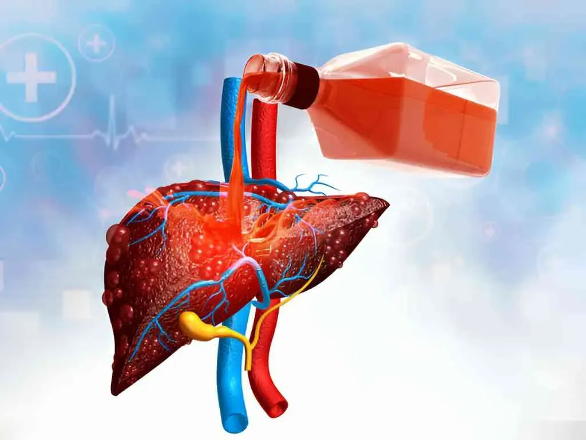

Alcohol Addiction Treatment By Senior Psychiatrist Dr. Gorav Gupta
Alcohol Addiction or alcoholism is a medical condition found in certain individuals who are involved in heavy or frequent alcohol consumption in spite of knowing its harmful consequences such as physical or emotional distress or a combination of both. The severity of this disorder varies from person to person depending upon the frequency and quantity of alcohol consumption. Some individuals prefer drinking heavily while others go for binge drinking.
In India, alcohol addiction is widespread both in urban and rural areas across all states. As per National Family Health Survey-4 conducted from 2015 to 2016 approximately, 23% to 74% males in general and 24% to 48 % females consume alcohol in India. Alcohol consumption in India contributes to an annual average loss of 1.45% of the GDP of the Indian economy.
A feeling of strong craving for alcohol consumption, repeated failure to limit the amount of consumption, depression, avoiding social functions and hobbies due to alcohol use are some of the common symptoms of alcoholism. Alcohol addiction treatment in India is believed to be a lifetime commitment with rehabilitation programs, drug therapy, and nutritional changes are known to be the best treatments offered by best alcohol rehabilitation centres in India.

Symptoms of Alcoholism
Popular symptoms of alcoholism are listed below:
- Greater alcohol consumption, either in frequency or quantity.
- Repeated unsuccessful attempts to cut down on alcohol consumption.
- Drinking alcohol at inappropriate times viz. early morning or inappropriate places viz. temple/ hospital.
- A strong urge or craving for alcohol consumption.
- Change in friend circle and indulging in making friends with people who have similar drinking habits.
- Constantly missing deadlines for fulfilling obligations at either work, school or home due to frequent alcohol use.
- Avoiding social gathering, or contact with loved ones.
- Developing a tolerance for alcohol or missing ‘hangover’ symptoms.
- Extreme dependency on alcohol consumption to execute daily activities.
- Depression, lethargy, and similar emotional distress.
- Experiencing sweating, nausea, and shaking when not consuming alcohol.
Causes of Alcoholism
Scientists have not yet been able to identify the exact cause of alcohol addiction but genetics, social and environmental factors, and attempts to ease emotional pain contribute to alcoholism.
Below is given a list either of causes that contribute alone or in combination for alcohol addiction:
- Family History
- Stressful environment
- Some untoward incident during childhood
- Mental health issues such as depression.
- Taking alcohol together with medicines
- Attempts to ease emotional pain.
Treatments for Alcoholism
As mentioned in the introductory section of this article, alcohol addiction treatment in India consists of rehabilitation programs, drug therapy, or nutritional changes or a combination of any of these depending on the criticality of the patient’s condition. Some of the popular treatments of alcoholism are given below:
Detoxification:
The best alcohol rehabilitation centre in India begin their treatment with detoxification, withdrawal from alcohol consumption using medication. This procedure is applied for 2-7 days at some inpatient treatment centre. Psychiatrists in Delhi prescribe sedating medications for preventing withdrawal symptoms.
Behavioral therapy:
Counseling, also called talk therapy offered by mental health care providers or best psychiatrist in Delhi whereby an alcoholic is taught various ways to change his/ her behavior. The most commonly used techniques are motivational, contingency, cognitive-behavioral, and 12-step facilitation.
Medications:
Acamprosate and Naltrexone are the approved medicines by the U.S. Food & Drug Administration for alcohol addiction treatment. Vivitrol, a medicine belonging to the naltrexone family when injected rather than taking in pill form, has proved to be effective to reduce alcoholism. On the other hand, acamprosate also helps combat alcohol cravings once an individual stops consuming alcohol. Studies have shown that topiramate and gabapentin are also effective medicines for reducing alcohol cravings. Disulfiram, an older medication may also help prevent the urge of consuming alcohol.
Psychological counseling:
Therapy and counseling for groups and individuals goes hand in hand to better visualize an individual’s problem with alcohol and help recover from the psychological aspects of alcohol use. Couple or family therapies have proved to be effective for the recovery process.
Support groups:
This therapeutic approach involves meeting with other people having similar disorders. Other forms of alcohol addiction treatment in India include Rational Recovery (non-spiritual), Celebrate! Recovery (Christian focus), and of course alcoholic anonymous which is absolutely free of cost. Additional elements of this therapy include participating in a support group or receiving medical or psychiatric attention.
Spiritual practice:
Regular spiritual practice helps maintain recovery from alcoholism. This simple treatment formula has helped many individuals gain greater insight into their spiritual side.
Why is Dr.Gorav Gupta the Best Doctor for treating alcohol addiction?
As mentioned in the introductory section of this article, treatment for alcoholism is a lifelong process and can be treated with the right medication, therapy and aftercare programs.
Dr Gorav Gupta is believed to be the best psychiatrist with years of clinical experience in treating various mental disorders including alcoholism. His approach for holistic alcohol addiction treatment in India includes a combination of medicine with psychotherapy.
Best alcohol rehabilitation centres in Delhi appointing Dr Gorav Gupta for treatment of alcohol addiction offers the following treatments:
- Medications
- Behavioral therapies
- Residential treatment programs
As a piece of advice, Dr Gupta advises patients to follow a healthy lifestyle which includes a healthy diet, getting quality sleep, practicing yoga/ meditation, and spending quality time with your loved ones for a healthy and productive life.